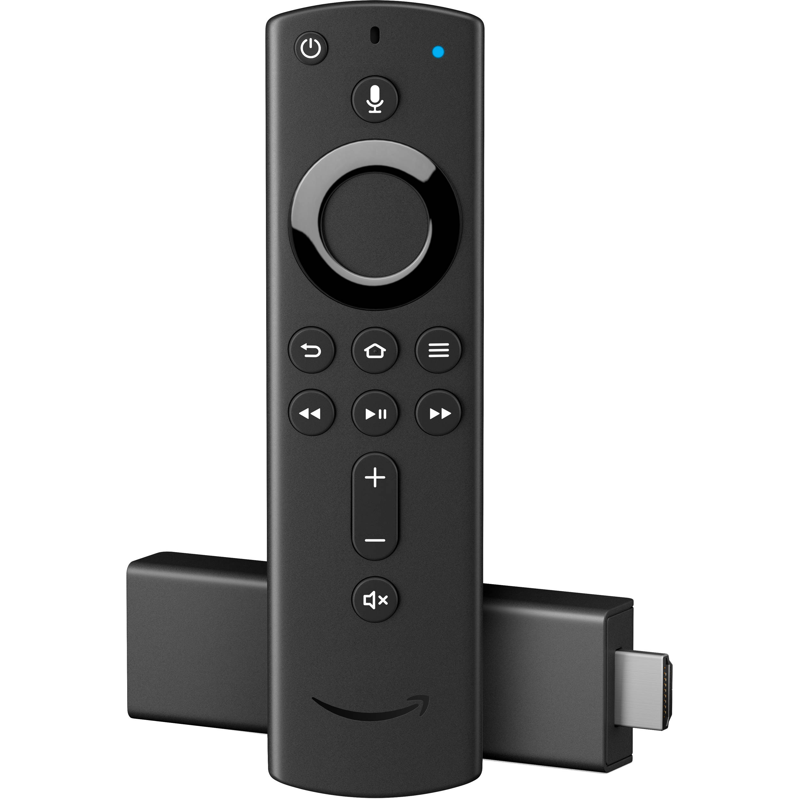

Amazon Fire TV Stick 4K (amazon-mantis)
Jump to navigation
Jump to search
|
 Fire TV Stick 4K | |
| Manufacturer | Amazon |
|---|---|
| Name | Fire TV Stick 4K |
| Codename | amazon-mantis |
| Released | 2018 |
| Category | testing |
| Original software | Android |
| Original version | 7.1.2 (Fire OS 6) |
| Hardware | |
| Chipset | MediaTek MT8695 |
| CPU | Quad-core ARM Cortex-A53 1.7GHz |
| GPU | PowerVR IMG GE8300 |
| Display | HDMI |
| Storage | 8 GB |
| Memory | 1.5 GB DDR4 |
| Architecture | aarch64 |
{kind=link}
| USB Networking |
Works
|
|---|---|
| Flashing |
Partial
|
| Touchscreen |
Unavailable
|
| Display |
Works
|
| WiFi |
Broken
|
| FDE | |
| Mainline |
Partial
|
| Battery |
Unavailable
|
| 3D Acceleration | |
| Audio |
Broken
|
| Bluetooth |
Broken
|
| Camera |
Unavailable
|
| GPS |
Unavailable
|
| Mobile data |
Unavailable
|
| SMS |
Unavailable
|
| Calls |
Unavailable
|
| USB OTG |
Works
|
| NFC |
Unavailable
|
| Accelerometer |
Unavailable
|
|---|---|
| Magnetometer |
Unavailable
|
| Ambient Light |
Unavailable
|
| Proximity |
Unavailable
|
| Hall Effect |
Unavailable
|
| Barometer |
Unavailable
|
| Power Sensor |
Unavailable
|
| Camera Flash | |
|---|---|
| Keyboard |
Unavailable
|
| Touchpad |
Unavailable
|
| USB-A |
Unavailable
|
| HDMI/DP |
Works
|
| Ir TX |
Unavailable
|
| Ir RX | |
| Stylus | |
| Haptics | |
| Ethernet | |
| FOSS bootloader |
Unavailable
|
Contents
Contributors
Maintainer(s)
Users owning this device
- FuchsPunk (Notes: Running pmOS)
- Ungeskriptet (Notes: Rooted, UART wires soldered)
Unlocking the bootloader
- Download and extract kamakiri-mantis-v2.0.1.zip
- Run the
bootrom-step.shscript from a Linux computer - Connect the Fire TV Stick to the computer with a USB cable. The script will now start exploiting the bootrom of the Fire TV Stick
- After the first script finished, run the
fastboot-step.shscript to flash TWRP - Your Fire TV Stick 4K is now successfully exploited and unlocked!
How to enter recovery mode
| Note: The stick detects if a USB OTG adapter is plugged in when booting. So to boot into TWRP, plug a mouse into the OTG adapter and click Cancel at the 5-second countdown. |
To boot into recovery/fastboot mode, run the boot-recovery.sh or boot-fastboot.sh script from this archive first and connect the Fire TV Stick with a USB cable to the computer.
Installation
| Note: The kernel only successfully compiles in armv7-mode, although aarch64 is supported by the SoC. |
Follow the installation guide and create a recovery zip, then export the zip using $ pmbootstrap export and copy it onto a USB drive. Boot the Stick into recovery mode and install the zip from USB drive by going to "Install", "Select storage" and select the last storage device. When plugging in a USB drive/selecting storage the device may freeze up, so only insert the USB drive when already booted in TWRP.
UART
To get UART working, solder wires the points shown below and run the enable-uart command in a TWRP shell. The baud rate is 921600.
{kind=link}